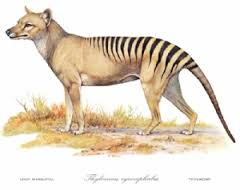
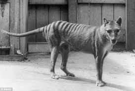

Informational Facts About The Tasmanian Tasmanian Tigers, Before The Extinction
Brief History
The thylacine was the largest known carnivorous marsupial of modern times. It is commonly known as the Tasmanian tiger or the Tasmanian wolf.

Behavior
Habitation